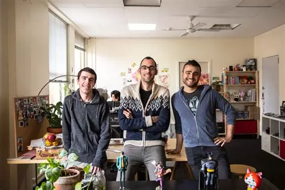

Hollow Knight a été créé par un petit studio indépendant australien appelé Team Cherry. Le studio est principalement composé de Ari Gibson, William Pellen et Jack Vine.


Ari Gibson est surtout responsable de la direction artistique du jeu. Il a notamment réalisé une grande partie des dessins et des animations qui donnent à Hollow Knight son style particulier.
William Pellen est l'un des principaux développeurs du jeu. Il a participé à la programmation et à la conception de nombreux éléments du jeu. Il avait déjà travaillé avec Ari Gibson sur un précédent projet appelé Hungry Knight, qui a ensuite servi de base à certaines idées de Hollow Knight.
Jack Vine a rejoint l'équipe et a notamment travaillé sur la programmation et le développement du jeu. Il a également participé à la création de différents systèmes qui permettent au jeu de fonctionner.
Le développement de Hollow Knight a commencé au début des années 2010. Pour financer le projet, Team Cherry a lancé une campagne sur Kickstarter en 2014. La campagne a rencontré beaucoup de succès et a permis à l'équipe de développer le jeu avec davantage de contenu.
Hollow Knight est finalement sorti en 2017 sur PC. Le jeu a ensuite été adapté sur plusieurs consoles, notamment la Nintendo Switch, la PlayStation 4 et la Xbox One.
Après le succès de Hollow Knight, Team Cherry a commencé à travailler sur une suite appelée Hollow Knight: Silksong. Cette fois, le joueur incarne Hornet, qui doit explorer un nouveau royaume appelé Pharloom.
Team Cherry reste un studio relativement petit comparé aux grands studios de jeux vidéo. Malgré cela, Hollow Knight est devenu un jeu très connu et a marqué de nombreux joueurs grâce à son univers, son exploration, ses combats et son style artistique.